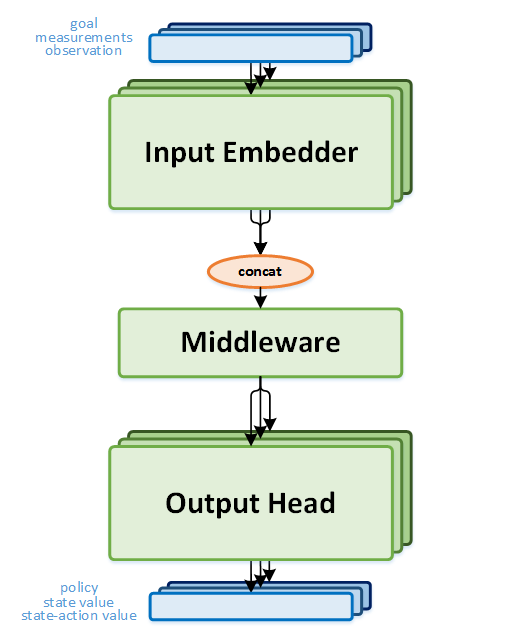
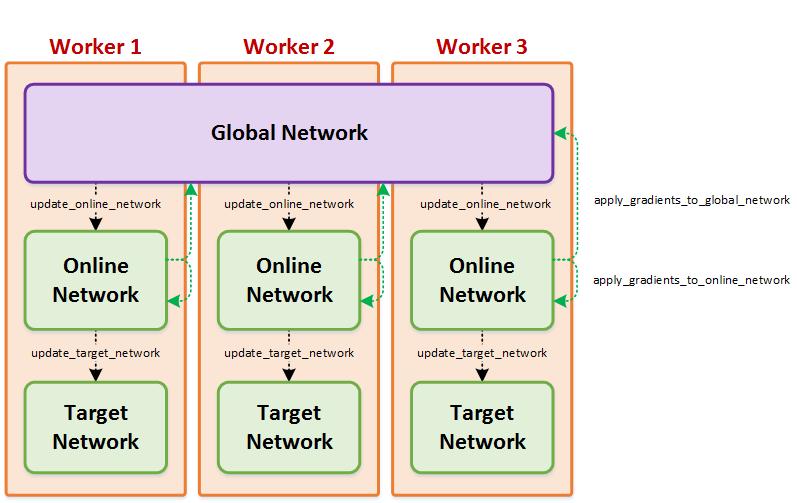

Coach Design
Network Design
Each agent has at least one neural network, used as the function approximator, for choosing the actions. The network is designed in a modular way to allow reusability in different agents. It is separated into three main parts:
-
Input Embedders - This is the first stage of the network, meant to convert the input into a feature vector representation. It is possible to combine several instances of any of the supported embedders, in order to allow varied combinations of inputs.
There are two main types of input embedders:
- Image embedder - Convolutional neural network.
- Vector embedder - Multi-layer perceptron.
-
Middlewares - The middleware gets the output of the input embedder, and processes it into a different representation domain, before sending it through the output head. The goal of the middleware is to enable processing the combined outputs of several input embedders, and pass them through some extra processing. This, for instance, might include an LSTM or just a plain simple FC layer.
-
Output Heads - The output head is used in order to predict the values required from the network. These might include action-values, state-values or a policy. As with the input embedders, it is possible to use several output heads in the same network. For example, the Actor Critic agent combines two heads - a policy head and a state-value head. In addition, the output heads defines the loss function according to the head type.
​

Keeping Network Copies in Sync
Most of the reinforcement learning agents include more than one copy of the neural network. These copies serve as counterparts of the main network which are updated in different rates, and are often synchronized either locally or between parallel workers. For easier synchronization of those copies, a wrapper around these copies exposes a simplified API, which allows hiding these complexities from the agent.

Supported Algorithms
Coach supports many state-of-the-art reinforcement learning algorithms, which are separated into two main classes - value optimization and policy optimization. A detailed description of those algorithms may be found in the algorithms section.